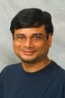

| Anindya Banerjee

I am a computer scientist interested in the science of computer programming.
Currently I am Program Director in the Division of Computing and Communication Foundations (CCF) of the Directorate for Computer and Information Science and Engineering (CISE)
at the US National Science Foundation.
I am on leave from The IMDEA Software Institute in Madrid, Spain, where I am full professor since 2009. Between 2001--2008, I was full professor in the Dept. of Computing and Information Sciences, Kansas State University.
More details are available in my CV.
|
Research
I am fascinated by the ideal of implementing software that is correct by construction. Yes, this ideal is achievable. Witness the tremendous progress, since 2000, in the science of software verification as well as in the engineering of verified software tools.
My primary research activities concern the development of theories, tools and experiments that embody principles of reasoning about security properties as well as functional behaviours of sequential, concurrent, networked and distributed software. In some form or the other, my work tries to answer the question: "Does your software do what it is supposed to do?"
My research spans software security, software verification, probabilistic programming, semantics and logics of programs, abstract interpretation, program analysis and program transformation.
Recent Publications
The following is a sample of some recent publications. My publications page provides full details of all publications. I gratefully acknowledge support from the US National Science Foundation, IBM T.J. Watson Research Center, Microsoft Research, the Madrid Regional Government, the UK Engineering and Physical Sciences Research Council, and the European Union.
-
Torben Amtoft and Anindya Banerjee.
A Theory of Slicing for Probabilistic Control-Flow Graphs.
In Nineteenth International Conference on Foundations of Software Science and Computation Structures (FoSSaCS) , April 2016.
[PDF |
Technical Report]
-
Ilya Sergey, Aleksandar Nanevski and Anindya Banerjee.
Mechanized Verification of Fine-grained Concurrent Programs.
In Thirtysixth ACM SIGPLAN International Conference on Programming Language Design and Implementation (PLDI) , June 2015.
[PDF |
Coq scripts |
Project page]
-
Ilya Sergey, Aleksandar Nanevski and Anindya Banerjee.
Specifying and Verifying Concurrent Algorithms with Histories and Subjectivity.
In Twentyfourth European Symposium on Programming (ESOP) , April 2015.
[PDF |
Project page]
-
Anindya Banerjee and David A. Naumann.
A Logical Analysis of Framing for Specifications with Pure Method Calls.
In Verified Software: Theories, Tools and Experiments - 6th International Conference (VSTTE) July, 2014.
PDF; Last revised, July 2014.
-
Alexander Malkis and Anindya Banerjee.
On Automation in the Verification of Software Barriers: Experience Report.
Journal of Automated Reasoning (JAR) 52(3), pp. 275--329, March 2014.
[PDF | Experiments]
-
Shachar Itzhaky, Anindya Banerjee, Neil Immerman, Ori Lahav, Aleksandar Nanevski and Mooly Sagiv.
Modular Reasoning about Heap Paths via Effectively Propositional Formulas.
In
Proceedings of the Forty-first Annual ACM Symposium on Principles
of Programming Languages (POPL), pp. 385-396, January 2014.
PDF; Last revised, November 2013.
-
Aleksandar Nanevski, Anindya Banerjee and Deepak Garg.
Dependent Type Theory for Verification of Information Flow and Access
Control Policies.
ACM Transactions on Programming Languages and Systems (TOPLAS)
35(2), article 6, July 2013.
PDF
-
Anindya Banerjee and David A. Naumann.
Local Reasoning for Global Invariants, Part II: Dynamic Boundaries
Journal of the ACM (JACM) 60(3), article 19, June 2013.
PDF
-
Anindya Banerjee, David A. Naumann and Stan Rosenberg.
Local Reasoning for Global Invariants, Part I: Region Logic
Journal of the ACM (JACM) 60(3), article 18, June 2013.
PDF
-
Shachar Itzhaky, Anindya Banerjee, Neil Immerman, Aleksandar Nanevski and Mooly Sagiv.
Effectively-Propositional Reasoning about Reachability in Linked Data Structures.
In
25th International Conference on Computer Aided Verification (CAV),
July 2013.
Lecture Notes in Computer Science, Vol. 8044, pp. 756--772. Springer.
PDF;
Last revised, April 2013.